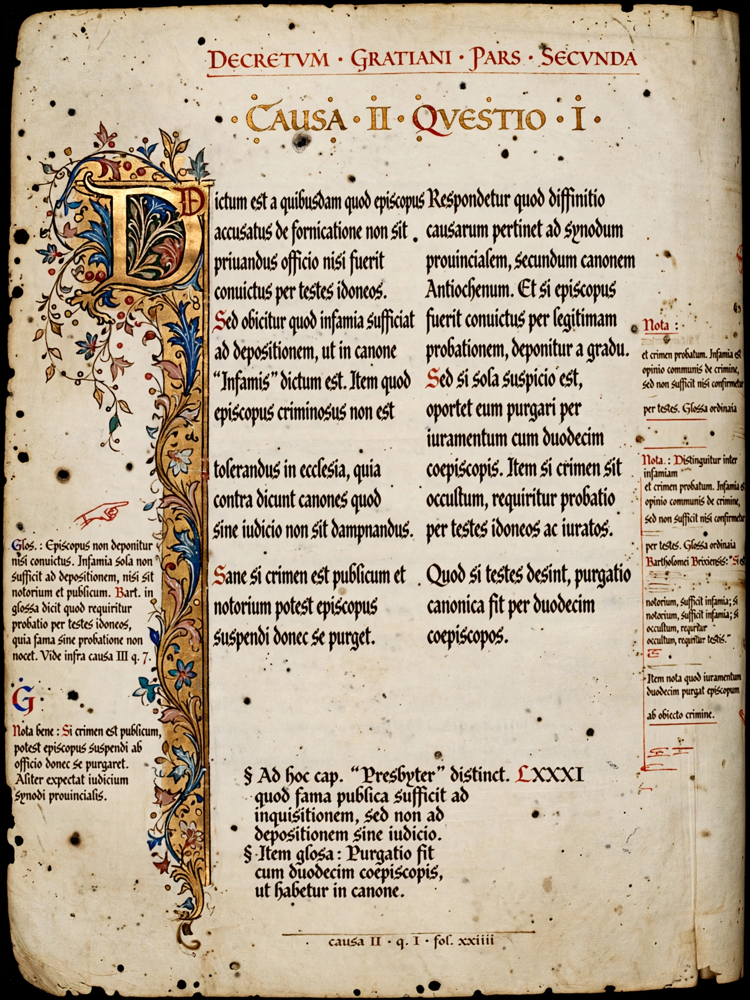

From Wikipedia, the free encyclopedia
| Decretum Gratiani | |
|---|---|
 | |
| Author | Gratian, a canon-law teacher at Bologna |
| Date | c. 1140 |
| Full title | Concordia discordantium canonum |
The Decretum Gratiani, also known by its fuller title Concordia discordantium canonum ("Concordance of discordant canons"), is a collection of canon law compiled around 1140 by Gratian, a jurist and teacher — traditionally described as a Camaldolese monk — working at Bologna. It became the foundational textbook of Western canon law.
Gratian gathered nearly 3,800 texts — church council canons, papal decretals, patristic writings, Roman law — and reconciled their apparent contradictions through commentary (dicta), applying the dialectical method also used by Peter Abelard in theology. The work is organised in three parts: the Distinctiones on laws and ministry, the Causae, hypothetical cases subdivided into questions, and the De consecratione on sacraments.
The Decretum was never officially promulgated but was used in courts and taught in universities everywhere; commentators called "decretists" glossed it, and it formed the first part of the Corpus Juris Canonici, which remained the Catholic Church's basic legal collection until the Code of 1917. Its treatment of topics such as the interdict and clerical discipline shaped medieval law for centuries.